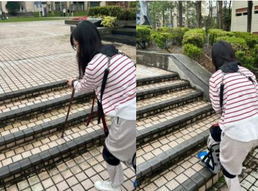
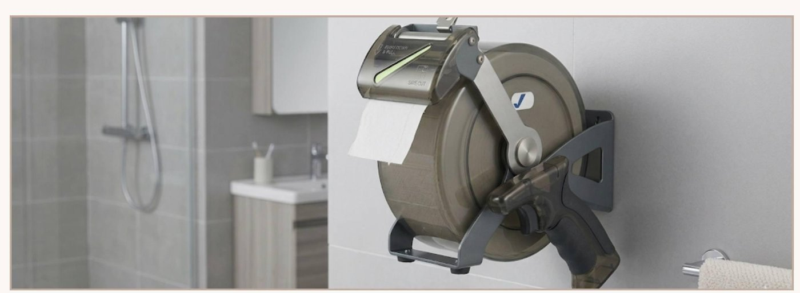
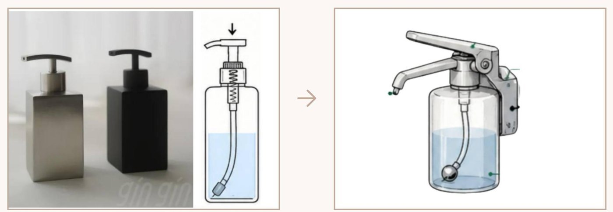
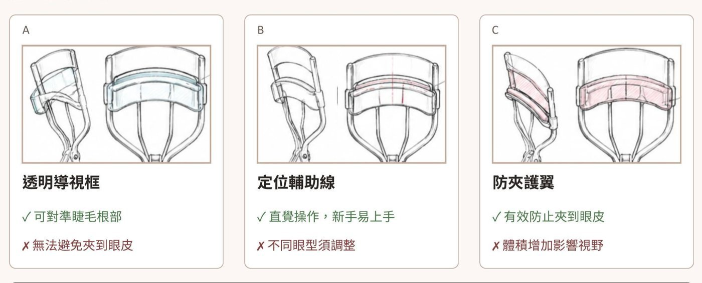
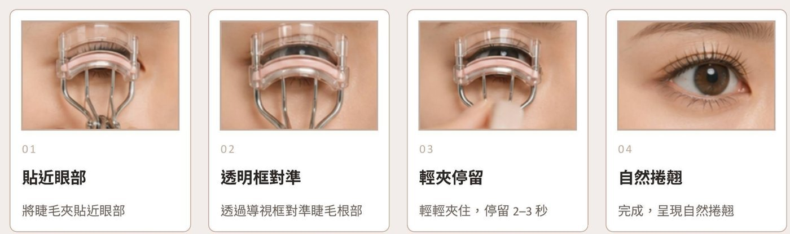

從一次校園障礙體驗開始，路線從人一、圖書館、二餐到竹軒。我負責照顧模擬感官退化的同學，一路幫她念標示、提醒路況，才發現原本理所當然的資訊，對她來說都成了障礙。我們把觀察整理成四個環境改善方案：平整路面、樓梯扶手、商品垂直陳列與放大輔助。
障礙體驗Observation



真正通用的設計，不應該讓人感到依賴，而應該讓人獨立。
好撕衛生紙架Midterm

公共廁所的大捲筒衛生紙架常常需要雙手撕、找不到紙頭、一扯就出來太多。對手部受傷、手無力或視力退化的人來說更困難。我的改法有三個：鋸齒切割邊讓單手就能撕斷；出口夾住器把紙頭固定在看得到、拿得到的位置；阻尼滾輪防止一次扯出太多。
按壓式洗手乳瓶Mechanism

一般按壓瓶有三個問題：吸管固定，液面低就吸不到；只有一個施力點，瓶子傾斜就壓不下去；彈簧阻力大，長者和孩童不容易按壓。改造後用側壓槓桿加大接觸面，利用長力臂把側向的輕壓轉成垂直推力；吸管換成矽膠軟管加末端配重，讓吸口隨重力滑到液體最低點，殘留量降到最少。
通用睫毛夾Final

給新手和長者的睫毛夾。使用睫毛夾的四個步驟裡，最難的是「確認睫毛是否進入」：視線會被夾子擋住，定位不準就容易夾到眼皮。我畫了三個方向：透明導視框、定位輔助線、防夾護翼，比較各自的優缺點後，把透明導視框和防夾護翼結合成最終方案。


最後也規劃了各零件的材料與製程：導視框用 PC 透明塑膠射出、防夾護翼用矽膠模壓、夾體用不鏽鋼沖壓、握把用 ABS＋TPR 雙料射出。